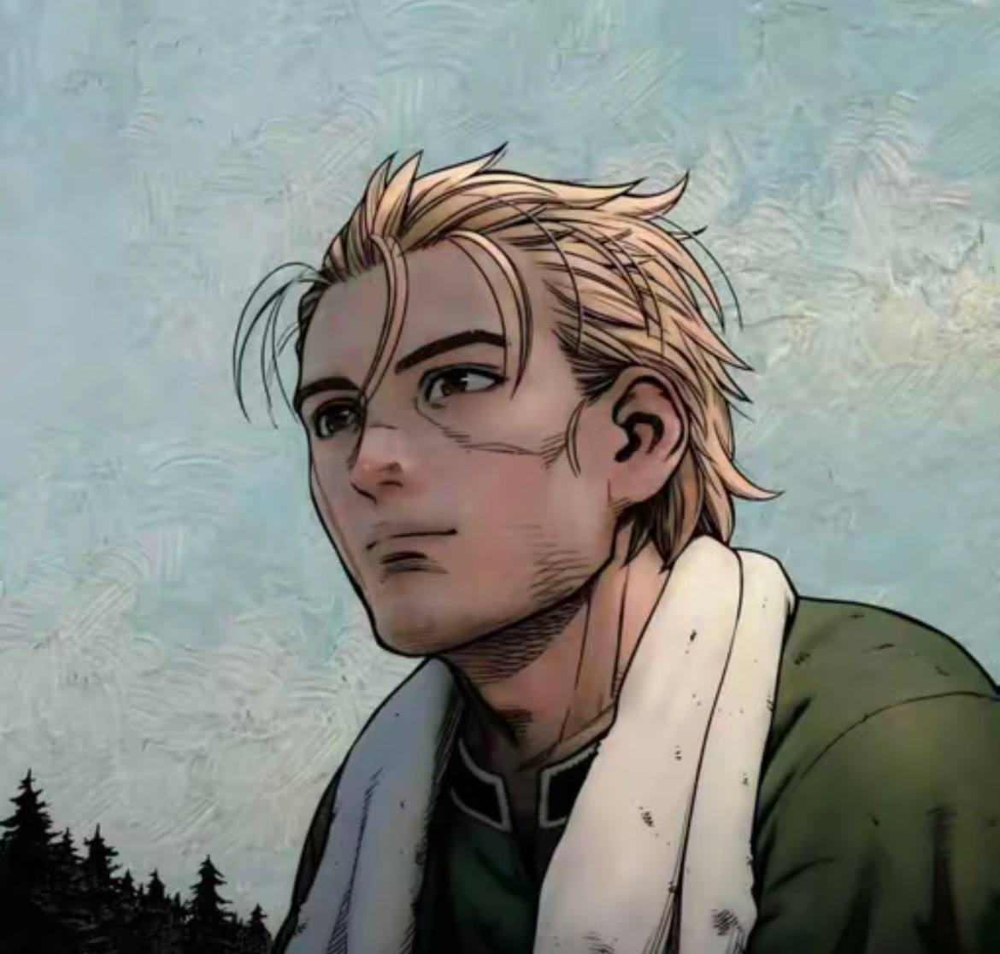
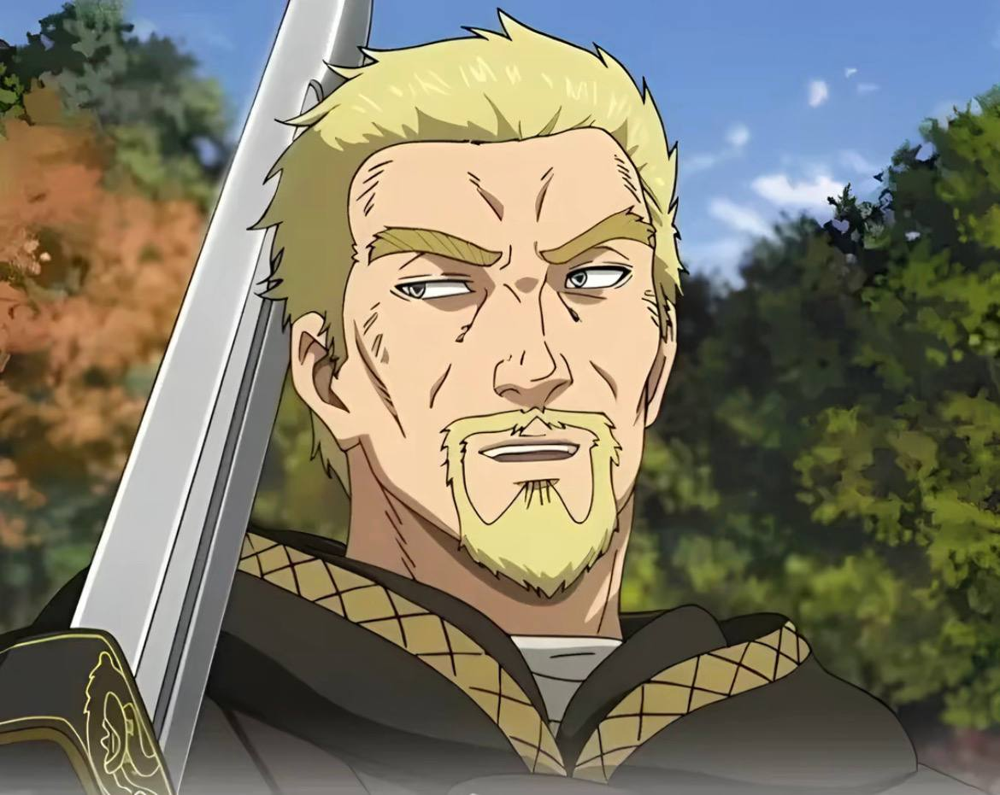
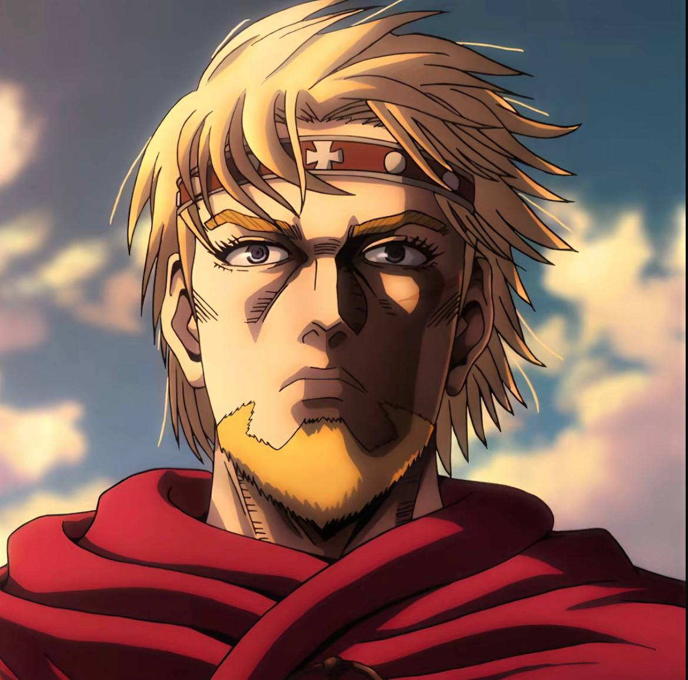
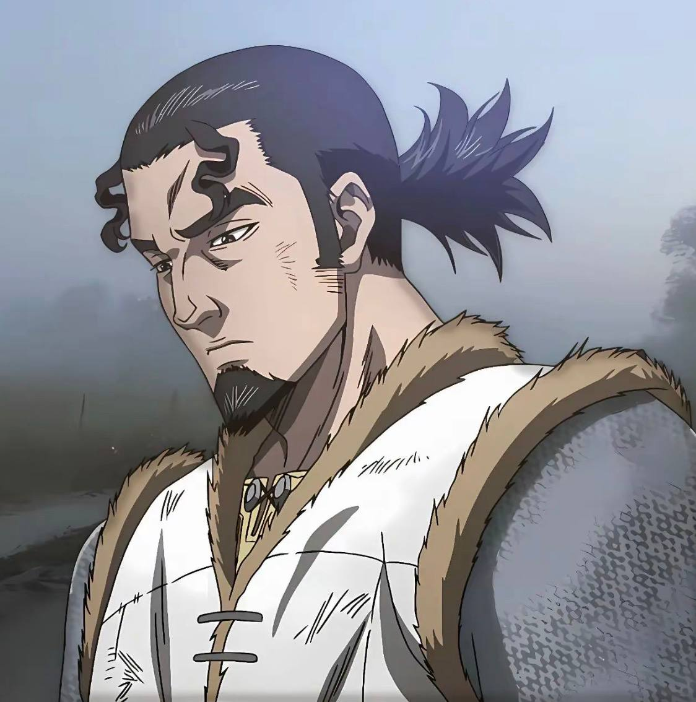

Главный герой истории. Сын легендарного воина Торса. В детстве становится свидетелем трагических событий, которые меняют его жизнь и заставляют пойти по пути мести. Сначала Торфинн живёт ненавистью и стремится стать сильнее через битвы, но со временем его мировоззрение сильно меняется. Его путь — это развитие от воина к человеку, ищущему смысл жизни и мир без насилия.

Хитрый и харизматичный лидер наёмников. Умён, расчётлив и редко действует напрямую — чаще побеждает стратегией. Несмотря на жестокость, у него сложный внутренний мир и собственные цели, связанные с происхождением и судьбой родины. Его отношения с Торфинном — смесь наставничества, манипуляции и противостояния.

Принц Дании, который поначалу кажется слабым и зависимым от других. Однако постепенно проходит серьёзную трансформацию — из тихого юноши становится сильным и решительным правителем. Его взгляды на любовь, власть и мир сильно влияют на сюжет и других персонажей.

Отец Торфинна, легендарный воин, известный как «Тролль Йомсборга». Отказывается от прежней жизни насилия и стремится жить мирно. Верит, что настоящий воин — тот, кто не нуждается в мечах. Его философия становится важной основой для развития главного героя
